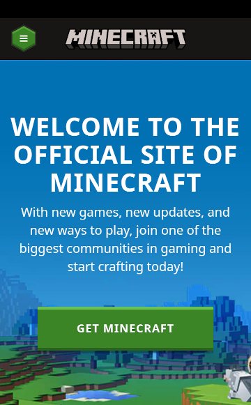
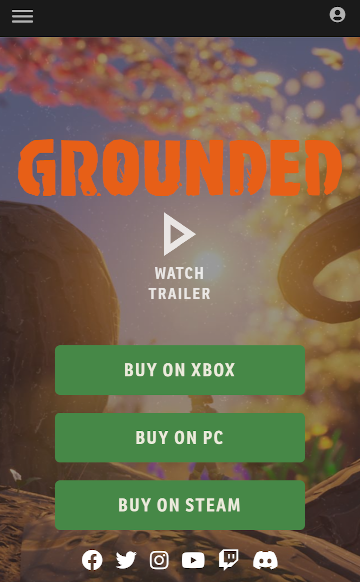
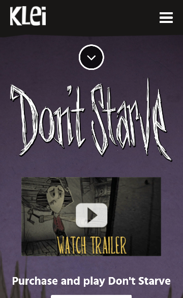

Visual Hierarchy
Minecraft Website
minecraft.net The Minecraft website does Visual Hierarchy effectively. The first thing you see is "Welcome to the official site of Minecraft". Then you see the "Get Minecraft" button. And then you see a short description about the game.
Rule of Thirds
Grounded Website
grounded.obsidian.net The website for this game called Grounded does the Rule of Thirds really well. The game's name and brand is located in the top third, and a bunch of roots or branches frame the outer edges. Most of the visual look is located in the left, right, top, and bottom thirds of the screen.
PARC: Contrast
Don't Starve Website
klei.com/games/dont-starve The website for Don't Starve does a great job of using Contrast. The white text really stands out on the dark background, and the font used as the game's branding causes it to pop out as effectively as an image would.